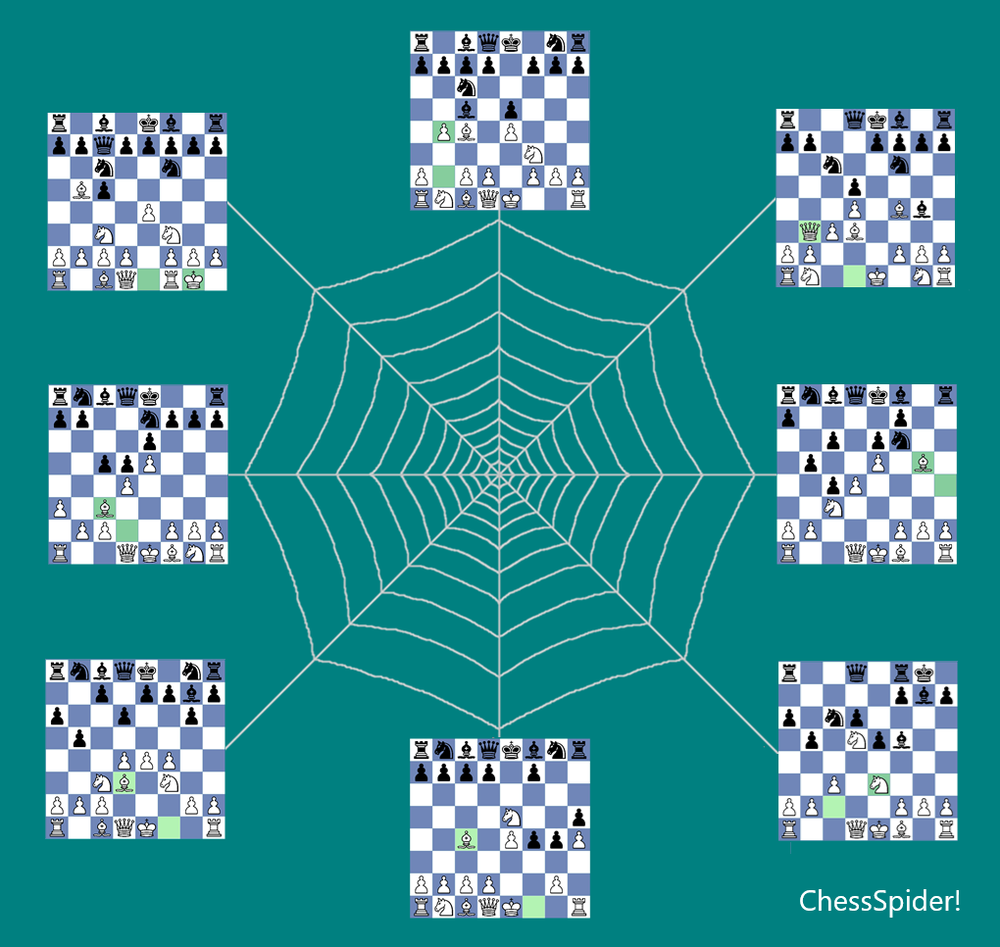

Chess Opening Preparation, Focused on Your Repertoire
Find the games that matter to the openings you actually play.
ChessSpider! connects your personal White and Black repertoires with your PGN collections, so you can find games containing positions from your repertoire and investigate them.
Fully functional. No registration or credit card required.
Unlimited version after the trial. Purchase is optional and there is no automatic charge.

Start With Your Repertoire
Your repertoire defines the positions and variations that matter to your chess. A large PGN collection, on the other hand, may contain thousands of games that are completely irrelevant to you.
ChessSpider! lets you use your repertoire as the starting point: search your PGN collections for games containing your repertoire positions, then examine the games and variations you are interested in.
See ChessSpider! in Action
Watch the 4.3 DemoThe Essentials
♟ Build Your Repertoire
Create and maintain your own White and Black repertoires using the positions and variations you choose.
🔎 Search Your PGNs
Find games containing positions from your repertoire in your own PGN collections.
💡 Investigate the Results
Open the relevant games, examine variations and use them to research the openings you play.
For Tournament Players, Club Players and Coaches
ChessSpider! is designed for anyone who wants to organise opening preparation around specific positions and investigate those positions in real games. It works with your own PGN collections, including annotated games and variations.
Frequently Asked Questions
Does ChessSpider! work with PGN files?
Yes. You can open and search valid PGN game collections, including files containing comments and variations.
Can I manage both White and Black repertoires?
Yes. You can maintain separate White and Black repertoires and organise them around the positions and variations you choose.
Does ChessSpider! run on Windows?
Yes. ChessSpider! is a Windows desktop application for opening preparation, repertoire management and PGN searching.
Is there a free trial?
Yes. The fully functional trial lasts 15 days. No registration or credit card is required.